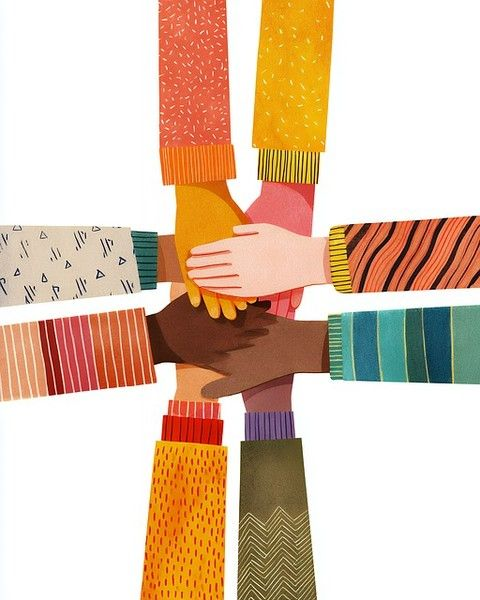
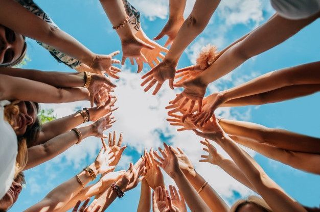
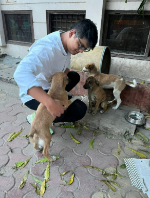
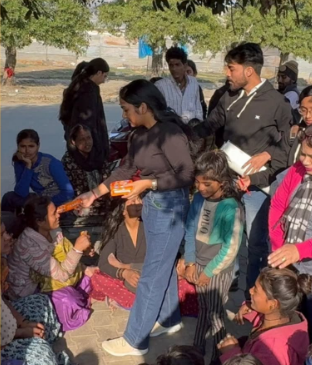
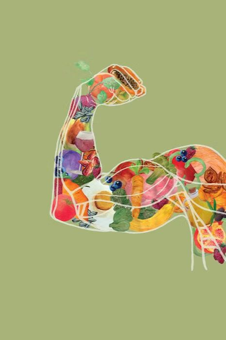
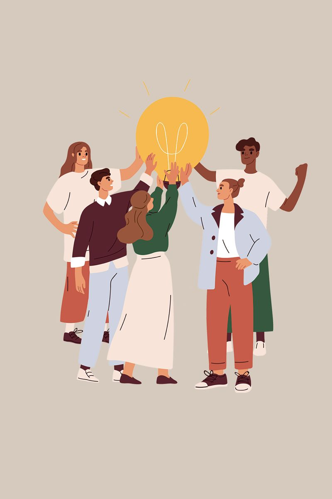
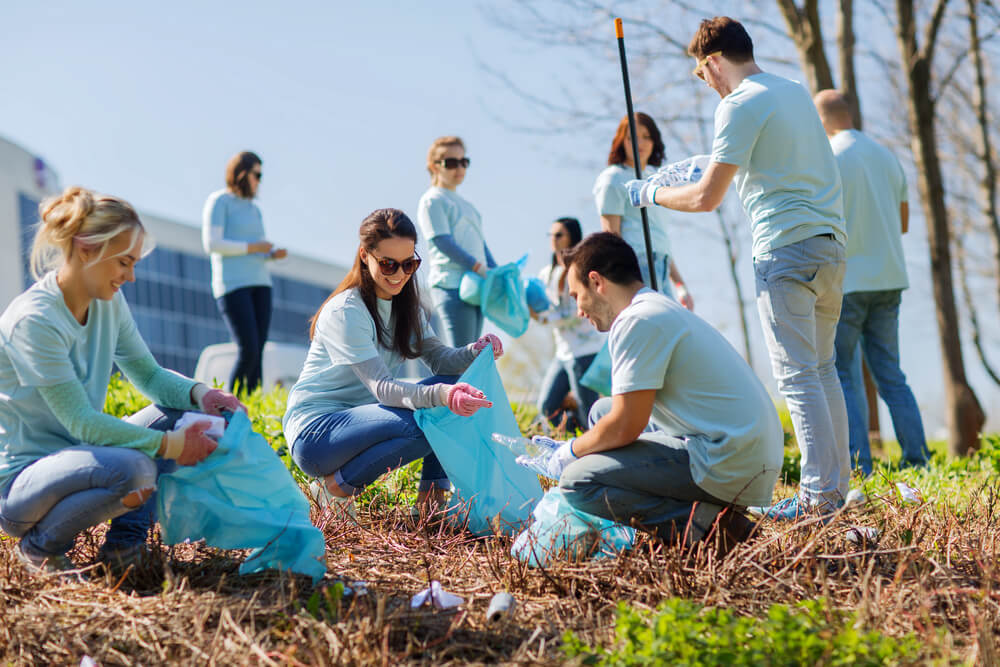

Project Vikas
01


Founded on September 23, 2020 by Mr. Govind Shukla, InAmigos Foundation works across education, food and clothing support, animal welfare, women empowerment, sustainability, health awareness, and youth skill development.
InAmigos Foundation is a Section 8 registered non-profit organization committed to creating lasting social impact. With its base in Chhattisgarh and work across India, the foundation brings together dedicated professionals and volunteers to respond to real community needs. Our work connects immediate relief with long-term change through education support, meals and clothing, animal care, women-led livelihood building, environmental action, and career development for young people.
Each initiative is shaped from InAmigos Foundation's official work: practical support, measurable outcomes, and opportunities for more people to participate.











Water is essential for life, yet millions worldwide face water scarcity and pollution. InAmigos Foundation is organizing an interactive event to educate and inspire meaningful action toward a water-secure future.
Happiness is not just a feeling; it is a way of life. This celebration explores well-being, kindness, and positive change, showing how small actions can make a big impact on people and society.
This global initiative highlights the crucial role women play in scientific advancement and innovation while encouraging young girls to pursue STEM careers in an inclusive environment.
InAmigos Foundation is a Section 8 registered non-profit organization licensed by the Central Government. It is also 80G and 12A certified, CSR-1 registered, IAF ISO 9001:2015 certified, and recognized with NGO Darpan - NITI Aayog.
The foundation works across education, food and clothing support, animal welfare, women empowerment, youth skill development, health awareness, and environmental conservation through a volunteer-led network across India.
Project Seva has distributed over 50,000 meals and clothing items to underprivileged communities, helping families meet urgent needs with dignity and care.
Project Vikas bridges education and employability through internships, training, webinars, resume building, interview preparation, and exposure to fields such as digital marketing, finance, operations, research, and social work.
Yes. Since the foundation is CSR-1 registered, companies can collaborate on structured social responsibility projects. CSR partnerships can support education, women empowerment, sustainability, animal welfare, relief drives, and youth skill development.
InAmigos Foundation is based at Ward No. 5, Gram Post, Sipat Ujwal Nagar, Bilaspur, Chhattisgarh, Pin-Code 495555.
Yes. Students and interns can contribute through Project Vikas and related initiatives in research, operations, digital outreach, event support, fundraising, content, design, social work, and community engagement roles.
Whether through volunteering, partnerships, or donations, every contribution helps expand education, relief, sustainability, animal care, women empowerment, and youth development work.
Scan the QR or use the bank details to support meals, education, animal welfare, plantation work, women empowerment, and youth development.